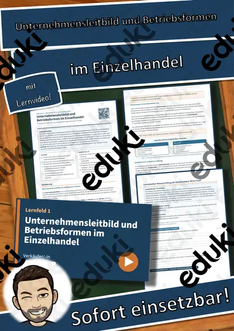
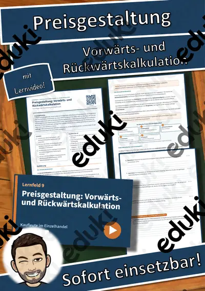
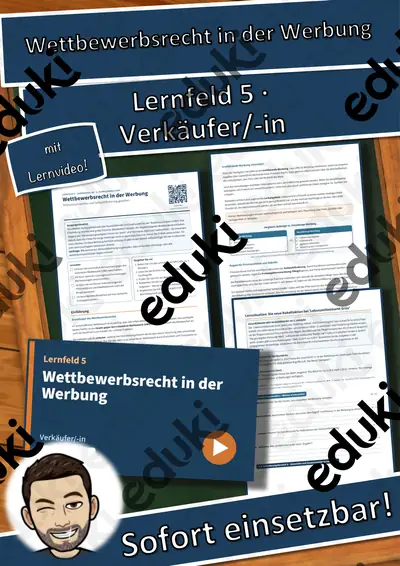
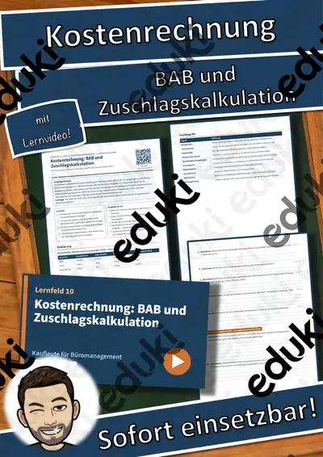
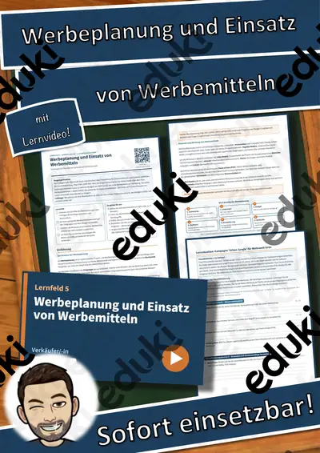
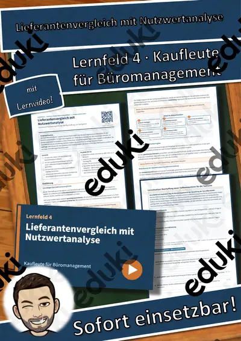

LF 2 Kaufleute für Büromanagement: Prioritäten setzen: Eisenhower und ALPEN im Büro – Übungen, Lösungen + Lernvideo
Prioritäten setzen: Eisenhower und ALPEN im Büro – Aufgaben ordnen und den Arbeitstag realistisch planen – Einführung und Übung für Auszubildende im Büromanagement (Lernfeld 2)Für den Berufsschulunterricht im Ausbildungsberuf Kaufmann/ -frau für Büromanagement, Lernfeld 2 „Büroprozesse gestalten und Arbeitsvorgänge organisieren“ (1. Ausbildungsjahr).
Das steckt drin (13 Seiten):
- Einstieg mit realistischer Ausgangssituation und Leitfrage
- Einführung als Sachtext auf Berufsschulniveau mit Merkekästen
- Schaubild und Fachbegriffe-Tabelle
- handlungsorientierte Lernsituation mit Materialien
- 12 Aufgaben nach Anforderungsbereichen (I: 4, II: 5, III: 3) mit Punkten und Sozialform
- Selbstcheck, Prüfungstipp und Notenorientierung
- ausführliche Lösungen auf eigenen Seiten
- QR-Code zum passenden Lernvideo (ca. 3–6 Minuten, mit Untertiteln)Lernziele:
- Ich kann erklären, worin sich Wichtigkeit und Dringlichkeit einer Aufgabe unterscheiden.
- Ich kann Aufgaben mit dem Eisenhower-Prinzip in vier Felder einordnen und passende Handlungen ableiten.
- Ich kann die fünf Schritte der ALPEN-Methode nennen und für einen Arbeitstag Zeiten und Pufferzeit berechnen.
- Ich kann einen Tagesplan mit festen Terminen, Pause, Planungs- und Nachkontrollzeit sowie sinnvoll verteilter Pufferzeit erstellen und kritisch prüfen.
- Ich kann Störfaktoren benennen und Regeln für den Umgang damit entwickeln.
Alle Betriebe, Personen und Fälle sind frei erfunden, alle Grafiken eigene Darstellungen. Sofort einsetzbar im Unterricht, für Vertretungsstunden, zur Prüfungsvorbereitung und zum selbstständigen Lernen.
FachWirtschaft, Versicherung & Verwaltung (BS)
Klasse–
SchulformBerufsschule
MaterialartArbeitsblätter, Prüfungsvorbereitung
Ähnliche Materialien

LF 1 Verkäufer/-in: Unternehmensleitbild und Betriebsformen im Einzelhandel – Übungen, Lösungen + Lernvideo
LF 1 Kaufleute für Büromanagement: Rechte und Pflichten in der Ausbildung – Übungen, Lösungen + Lernvideo

LF 9 Kaufleute im Einzelhandel: Preisgestaltung: Vorwärts- und Rückwärtskalkulation – Übungen, Lösungen + Lernvideo

Lernfeld 5 Verkäufer/-in: Wettbewerbsrecht in der Werbung – Einführung, Übungen, Lösungen + Lernvideo

LF 10 Kaufleute für Büromanagement: Kostenrechnung: BAB und Zuschlagskalkulation – Übungen, Lösungen + Lernvideo
Lernfeld 14 Verkäufer/-in: Finanzierungsarten und Zahlungsverzug – Einführung, Übungen, Lösungen + Lernvideo

LF 5 Verkäufer/-in: Werbeplanung und Einsatz von Werbemitteln – Übungen, Lösungen + Lernvideo
